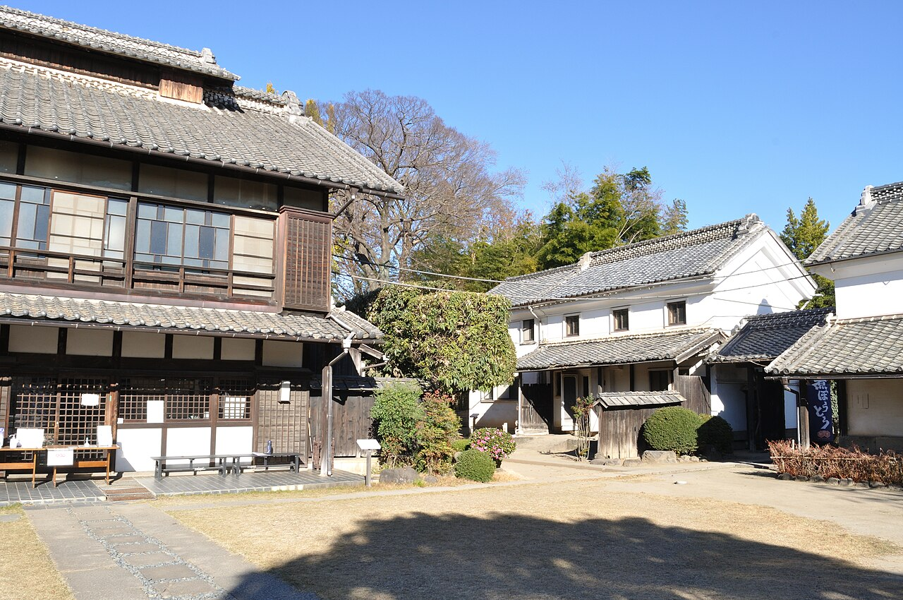
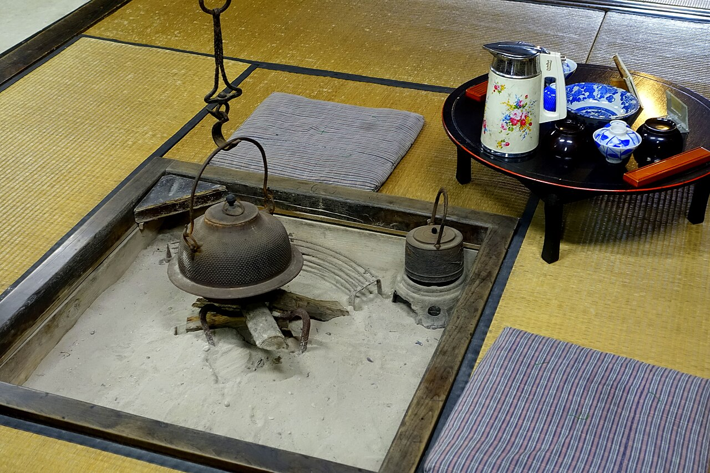
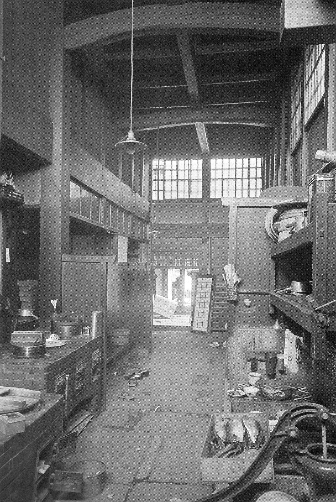

はれのひについて
晴れた日の縁側のような、
やわらかな時間を。
古民家でひと息つく
古民家でひと息つく
古民家には、現代の建物にはあまりない魅力があります。
木の梁や柱が生む落ち着き、障子越しにひろがるやわらかな光、窓の外に見える庭の緑。
「はれのひ」は、そんな古民家ならではの空間で、ゆっくりお過ごしいただける香川県善通寺市のカフェです。
建物の様子や店内の設えの詳細は、お問い合わせまたはInstagramでご確認ください。

過ごし方のイメージ
- ひとりで本を片手に、静かにお茶の時間を。
- ご友人と縁側の明るさを感じながら、おしゃべりを。
- お散歩の途中に歩き疲れたら、ふらりと立ち寄って、ひと休み。

お店の情報
- 屋号
- 古民家かふぇ はれのひ
- 所在地
- 香川県善通寺市生野町2744
- @kominka.harenohi
- 営業時間
- 準備中(お問い合わせください)
- 定休日
- 準備中(お問い合わせください)
- 席数
- お問い合わせください
- 駐車場
- お問い合わせください
善通寺のまちへお出かけの際に
善通寺市周辺へのお出かけのついでに、ひと休みの場所としてもどうぞ。(距離・所要時間はお問い合わせください)
気になることは、お気軽にお問い合わせください。